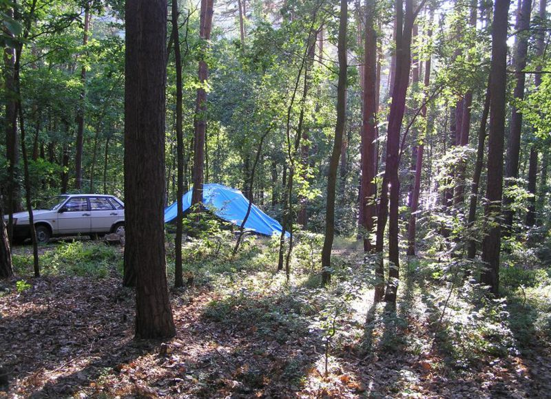
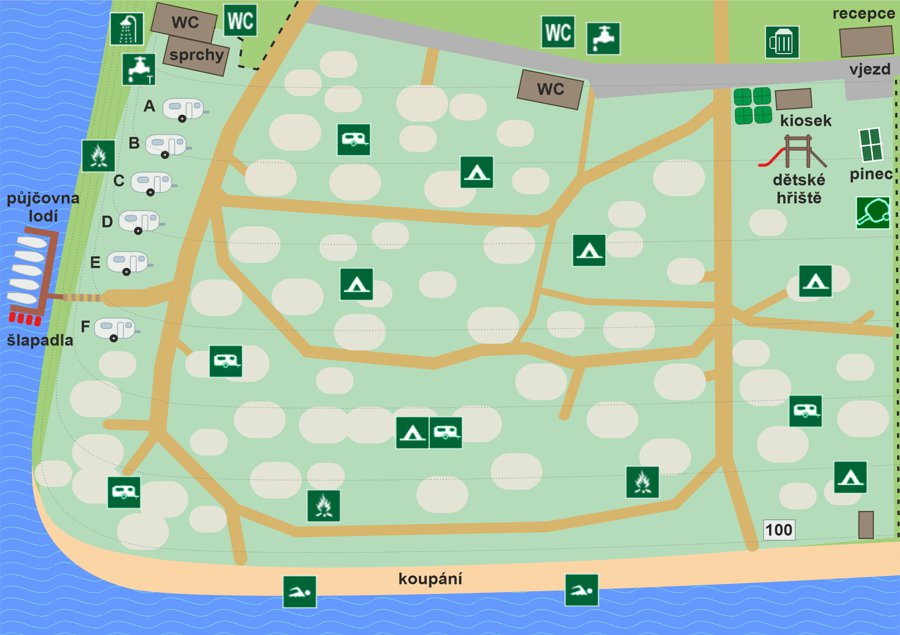
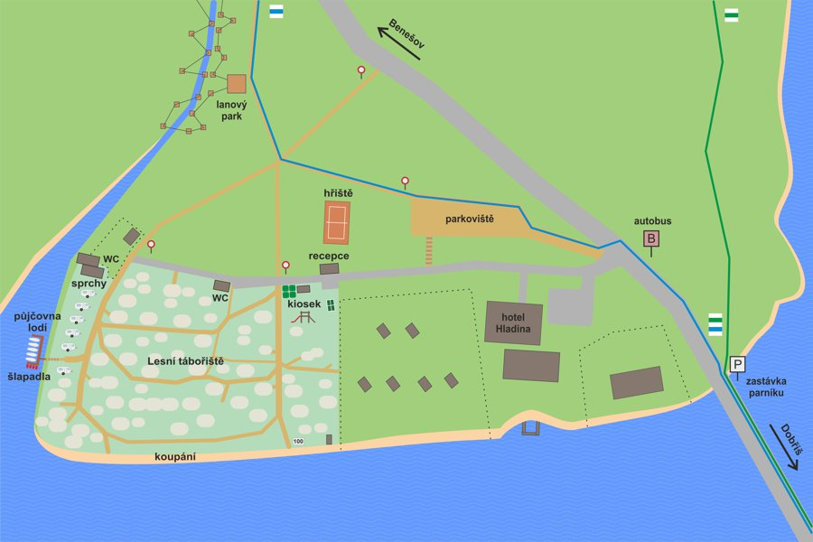

Kemp
Stanování a karavaning
Převážnou část plochy Lesního tábořiště tvoří prostor pro stanování a karavaning, s kapacitou zhruba 50 míst.

Prostor je dost specifický a nepodobá se kempům s rozlehlými zatravněnými loukami. U nás jsou stanovací místa v lesním prostředí volně rozmístěna mezi stromy a tudíž jsou velmi rozmanitá. Najdete zdse místa malá i velká, rovinatá i svažitá. Většina míst umožňuje parkování auta přímo u stanu, některá ale umístění vozu neumožňují, na druhou stranu díky okolnímu podrostu nabízejí soukromí, které byste v kempu nečekali. Menší stan lze postavit skoro kamkoli, avšak pro karavany a obytná auta je vhodných míst už méně. Počítejte také s tím, že umístění karavanu může být s ohlededem na svažitý terén a množství stromů poněkud obtížné. Ze stejného důvodu je tábořiště vhodné jen pro stany a menší karavany do celkové délky asi 6 m.
Pokud byste chtěli stanovat přímo u břehu, počítejte že takových míst je v kempu jen pár a v hlavní sezóně jsou většinou všechna obsazena. Na druhou stranu, ze kteréhokoli místa v kempu je to k vodě méně než 100 m.
- V horní části tábořiště naleznete dvoje sociální zařízení s toaletami a venkovními žlaby na mytí nádobí a čerpání pitné vody, a dále umývárnu s teplou vodou a sprchami.
- V kempu nejsou elektrické přípojky - připojení vašeho karavanu nebo stanu u nás není možné.
- V kempu není dovoleno zřizování nových ohnišť, použijte tedy některé z ohnišť zřízených provozovatelem, anebo přenosný gril či ohniště, která také půjčujeme v recepci.
K pobytu se zapisujte při příjezdu v recepci u brány. Pokud zde nikoho nezastihnete nebo přijedete mimo provozní dobu recepce, můžete se ubytovat sami; nejprve si najděte vhodné místo, pak teprve vjeďte do kempu autem a postavte si stan nebo umístěte karavan. Následně se přijďte zapsat k pobytu, podle provozních hodin a pokynů vyvěšených na recepci.
Volná místa a obsazenost kempu
Upozorňujeme, že místa pro stanování a karavaning u nás nelze předem rezervovat. Abychom vám pomohli zvolit vhodný termín pobytu a odhadnout, zda budou volná místa, uvádíme zde několik poznatků ohledně obvyklé návštěvnosti kempu:
- V květnu, červnu a září se nemusíte obávat, volná místa jsou prakticky vždy
- V červenci a první půlce srpna bývá kemp dost plný, a to zejména o víkendech. Pokud je dobré počasí, v pátek večer nebo v sobotu bude dost možná zcela plno. Pokud chcete přijet na víkend, doporučujeme v pátek dorazit co nejdříve. Jednodenní pobyty s příjezdem v sobotu nedoporučujeme. Jestliže plánujete delší pobyt, třeba na týden, je ideální přijet v neděli odpoledne nebo v pondělí. Volné místo je pak skoro jisté a budete si také moci lépe vybrat.
- Samozřejmě také hodně záleží na počasí. Stručně řečeno: deštivo = málo lidí, pěkné letní počasí = hodně lidí, tropické počasí = narváno.
- Výše uvedené platí pro rodiny nebo malé skupiny se stanem (stany). Pokud plánujete pobyt větší skupiny, například v rámci nějaké organizované akce, apod, určitě nám napřed zavolejte. Jestli chcete přijet s karavanem nebo obytným autem, v zásadě u nás platí "čím menší, tím lépe", jak je vysvětleno výše v textu.
Plánek kempu


Naše ocenění
Ohodnoťte nás v soutěži